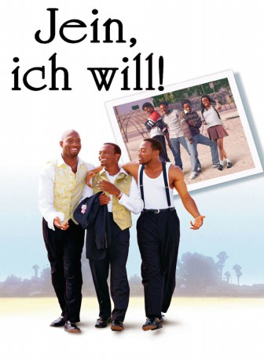

#8591 The Wood
Alternativ: Jein, ich will!
 
 IMDB-Wertung: 6.9 / 10
IMDB-Wertung: 6.9 / 10  Metascore: 0
Metascore: 0 
Wenige Stunden vor seiner Hochzeit gerät Roland in ein emotionales Chaos. Er muss immer wieder an seine Erlebnisse mit seiner ersten Freundin Tanya an der Highschool denken. Zusammen mit zwei alten Freunden, Mike und Slim, schwelgt er in romantischen Erinnerungen an die 80er Jahre, ihre Musik und die heißen Mädchen von damals. Unter dem Geleitschutz seiner Freunde beschließt Roland, seiner Jugendliebe Tanya vor seiner Heirat noch einmal einen Besuch abzustatten.
Jahr: 1999
Dauer: 106 Minuten
FSK: 12
Land: USA Studio: Paramount PicturesTonspuren: DD2.0 - ,
Untertitel: Deutsch, Englisch,
Auflösung: 1080p (1920x1080) Größe: 11161 MB
Genre: Drama, Komödie, Liebe
Regisseur: Rick Famuyiwa
Drehbuch: Rick Famuyiwa
Soundtrack: Robert Hurst
Darsteller:
- Elayn J. Taylor als Roland's Mother
 Omar Epps als Mike
Omar Epps als Mike Richard T. Jones als Slim
Richard T. Jones als Slim Sean Nelson als Young Mike
Sean Nelson als Young Mike- Duane Finley als Young Slim
- Malinda Williams als Young Alicia
 Patricia Belcher als Mrs. Hughes
Patricia Belcher als Mrs. Hughes Taye Diggs als Roland
Taye Diggs als Roland Tamala Jones als Tanya
Tamala Jones als Tanya- De'aundre Bonds als Stacey
- Cynthia Martells als Mike's Mother
- Jascha Washington als Mike's Brother
 Antwon Tanner als Boo
Antwon Tanner als Boo John Wesley als Police Officers
John Wesley als Police Officers- Oscar Dillon als Police Officers
- Douglas Shamburger als D.J. on Radio
 Christina Milian als Girls at Dance
Christina Milian als Girls at Dance Dawnn Lewis als Woman in Cleaners
Dawnn Lewis als Woman in Cleaners- Stacy Arnell als Woman with Stacey
- Telma Hopkins als Slim's Mother
- LisaRaye McCoy als Lisa
 Basil Wallace als Lisa's Father
Basil Wallace als Lisa's Father Sanaa Lathan als Alicia
Sanaa Lathan als Alicia- Nayo Wallace als Girl In School Hallway (uncredited)
- Trent Cameron als Young Roland
- Wyking Jones als Cashiers in Mini Mart
- Geoffrey Blackshire als Cashiers in Mini Mart
- Aiysha Sinclair als Tracey
- Melvin Lyons als Gang member
- Sam Hiona als Cashier in mini-mart 1986
- Tia Gainer als Girl at Dance
- Howard Thompson als D.J. at Dance
- Brandi Wilson als Girls at Dance
- Crystal Celeste Grant als Girl with Slim
- La'Myia Good als Monica
- Alecia Smith als Girl with Roland
- Morgan Rosen als Girl with Slim
- Todd Boyd als Reverend Parker
Datei: X:\1999\Wood, The (1999, FSK12, 1920x1080).mkv seit 22.03.2018
Festplatte: HD 1996-2002
 Es gibt insgesamt 81 Filme in der Gruppe '1999'
Es gibt insgesamt 81 Filme in der Gruppe '1999'